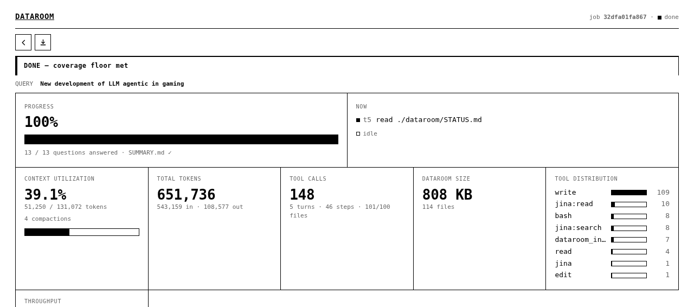
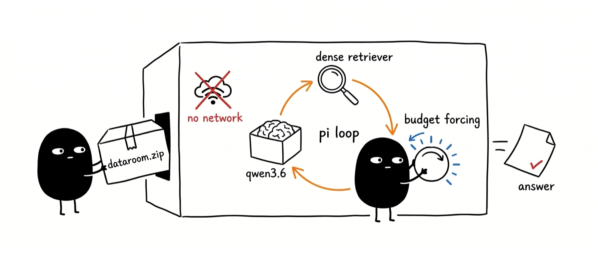
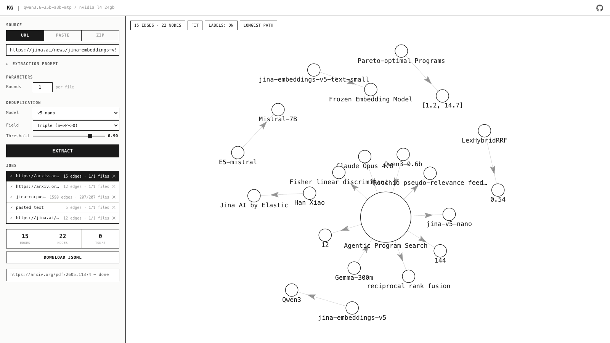

Autoresearch &
test-time compute for
information retrieval
Spend more compute at inference, get a better answer.
Trade inference compute for quality: rather than a bigger model, the model does more work per query, along a smooth cost-versus-quality curve.
Having a bot think for just 20 seconds in a hand of poker got the same performance boost as scaling up the model by 100,000× and training it for 100,000 times longer.Noam Brown, OpenAI, 2024
Search is test-time compute.
You wire trained embeddings, rerankers, multi-vector retrievers, and query expanders into a pipeline at inference to squeeze out relevance. You do not need a bigger model. You assemble more search at test time.
The question is not whether the model is big enough. It is how much search pipeline you assemble at test time, and whether it pays off.
Two ways to manufacture that pipeline at test time.
"Small models gain nothing." But they are distilled from LLMs.
Test-time compute is said to belong to large reasoning models, with small models having nothing to gain. Yet today's embedders - including the small deployable ones - are distilled or adapted from LLM backbones:
The lineage from a large language model to a small deployable encoder is now the dominant recipe, not the exception.
If test-time compute lives in the LLM representation space, these distilled encoders should inherit it. Do they?
Scoring runs from one cosine to late interaction.
How much can a frozen single-vector encoder gain at inference alone?
The prominent recent test-time methods for retrieval each break at least one rule:
We forbid all three, and ask whether the gain scales with the compute spent.
Autoresearch: let the agent climb the hill.
An agent runs the research loop itself: change one file, run a short fixed-budget experiment, keep the change if the metric improved, otherwise revert. Repeat, overnight. It is hill-climbing, with an LLM as the mutation function.
You're not touching any of the Python files like you normally would as a researcher. Instead, you are programming the program.md files that set up your autonomous research org.Andrej Karpathy, Anthropic, 2026
An LLM agent writes programs over the frozen encoder, and an evaluator scores them.
per generation
small + fast
ΔnDCG@10
lesson per program
scored
The proposer is an LLM, used as the mutation function.
Opus 4.6 reads the current frontier source and the memory ledger, edits one Python program, and proposes the next. Keep it if the metric improves, else revert. No human in the inner loop.
It optimizes exactly the metric you hand it - not the one you mean. Reward in-domain performance and reward spending compute, and that is what it will chase. Whether the gain survives out of domain is a separate question. The objective is the steering wheel.
The program is arbitrary Python over the frozen encoder.
embed_fn, q_texts, d_texts) -> scores
embed_fn is the test-time-compute budget. It re-embeds any text, switches the LoRA adapter (retrieval / passage / classification / matching), picks a Matryoshka dimension, or caps length. One call is one unit of compute.
Auto-rejected: hyperparameters, stochastic ops, task-specific routing, external models, learned parameters, trivial constant-only variants. The taboos force task-agnostic structure, not a per-task tuned config.
The evaluator scores every program on the same 14 tasks.
Every program runs on the same 14 MMTEB Tier-1 discovery tasks (legal, financial, long-document, general). The evaluator scores ΔnDCG@10 against the cosine baseline, plus a cost ratio (embed_fn calls per query). The same fixed budget every generation.
The loop only ever sees these 14 tasks. The 19 held-out tasks never enter the loop, so a program can win in-domain and still fail out of domain. That gap is the entire experiment.
Every program is logged, and the log conditions the next one.
A JSONL ledger, one row per program: per-task ΔnDCG@10, win/tie/loss, cost ratio, parent, a novelty claim, and a post-hoc lesson. The proposer reads the frontier source plus this history, so each round builds on the last.
Compounding cuts both ways: memory builds on real wins, but it also compounds whatever bias the objective has. A biased metric does not just mislead one program, it steers the whole lineage.
What we search on, and what we test on.
must generalize
Metric: ΔnDCG@10, the program's nDCG@10 minus the cosine baseline. Gemma and Qwen share no training data, tokenizer, or adapter with the discovery model; qwen3-0.6b runs under a token-length cap.
Cost is one number: extra forward passes through the encoder.
One reuses the geometry you already have; the other spends a forward pass on new text. Which converts into quality that transfers?
We run the search under two admission rules.
Neither search ever sees the 19 held-out evaluation tasks or the unseen encoder families.
Told to spend compute, the search draws a clean Pareto curve.
In-search mean ΔnDCG@10 climbs from +0.07 to +0.24. This looks exactly like test-time-compute scaling.
In-search only. The held-out test comes next.
Twelve programs on the compute frontier.
Every one is a training-free recombination of the same frozen vectors. Cost climbs left to right; the gains, as the next slide shows, do not.
On unseen encoders, compute is flat. Cheap structure is not.
The transfer-search program at \(c = 1.0\), zero extra forward passes, already beats the most expensive compute program at \(c = 14.7\). Median is plotted, robust to the \(-0.98\) tail; the pooled mean is negative too.
Compute helps about half the cells, and collapses the rest.
Each row is one of twelve programs ordered by compute cost (1.2× to 14.7×); each column is one of nineteen held-out tasks; four encoders, three never seen during the search. About half the cells are positive (485 of 912), and 52 of 76 task-encoder pairs improve under at least one program - yet the deep-pink cells fall to −0.98, so the pooled mean stays negative at −0.016.
A different search finds six cheap programs that transfer.
| Program | \(c\) | Median | Win-rate | Mean | Worst cell |
|---|
The transfer search (the other rule) admits a different six - not the twelve compute programs, and all at most 1.5×. Higher cost still trends with lower held-out quality. At an 83% win-rate the best transfer program never loses a single task, and its worst per-query cell is only −0.107, almost an order of magnitude above the compute frontier's −0.98 collapse. It turns the held-out mean positive by bounding the worst case.
Gains are largest on encoder families never seen in discovery.
Discovered on j-v5-nano. Mean ΔnDCG@10 is positive on all four encoders and largest on the two families never seen during discovery; the medians sit near zero on the jina-family encoders, so the gain is concentrated in a positive tail, not broad. The transfer follows general embedding geometry, not artifacts of the discovery encoder.
Applied unmodified to French and Greek: median +0.016, an 86% win-rate, and every held-out cell positive on gemma-300m.
A matched-budget learned head memorizes. Structure transfers.
Trained on the same 14 discovery tasks, a linear, low-rank, or MLP head improves in-domain retrieval by +0.20 to +0.25 ΔnDCG@10, yet falls below baseline on every held-out encoder.
Adding parameters at the same data budget does not transfer. Recombining the frozen geometry does.
The recurring structure is classical IR, re-derived in embedding space.
Not new programs - four classical methods the search keeps re-deriving across both frontiers: two rediscovered (RRF, Fisher), two operationalized from seeds (Rocchio, MaxSim). The structure is geometric (z-scoring, sub-document granularity, centroid feedback) and depends on cosine geometry, not model-specific training, so the cheap forms carry to encoder families never seen during discovery.
Test-time compute is the pattern for deep research and long-horizon tasks.
Research and execution want different tokens: build the dataroom with cheap local ones, and save the costly frontier budget for the execution that actually needs it. That two-tier split is dataroom, then searchbox, next.

dataroom: a loop for knowledge dump.
Given a token budget, spend it on local small models instead of a frontier model: run search → read → write, repeat, until the knowledge is dumped into one cited .zip. That dump is the dataroom - the open web distilled down to a small, local corpus a machine can consume.
Stage one of two: the grounded .zip then goes to searchbox (next) or a frontier model for the expensive second stage.

searchbox: a testbed for studying agentic search loops.
An airgapped testbed for search as test-time compute: lock an agent in the box with one .zip dataroom and no web, so it can only answer by composing its own pipeline from local tools - grep, embed, rerank, similarity, cluster, select_diverse. Nothing leaks in; the search has to exhaust what is in the box.
Which tool does the agent reach for first?
Is grep all you need: where does a dense retriever add nothing?
Does forcing more token budget (scaling TTC) help on the hard questions?

knowledge-graph: hard multi-hop questions for a private verifier.
Trivial questions are useless for agentic search: if one grep finds the answer, every method scores the same. To evaluate searchbox you need questions that force the search to actually work.
Turn the corpus into a knowledge graph - each fact a (subject)-[predicate]->(object) edge - then walk its longest paths. Those chains become hard multi-hop questions no single passage answers: a private, corpus-grounded eval, grown from the same corpus searchbox is locked inside.

Both manufacture a search pipeline at test time. Neither grows the model.
Information retrieval
is test-time compute.
@hxiao · in/hxiao87